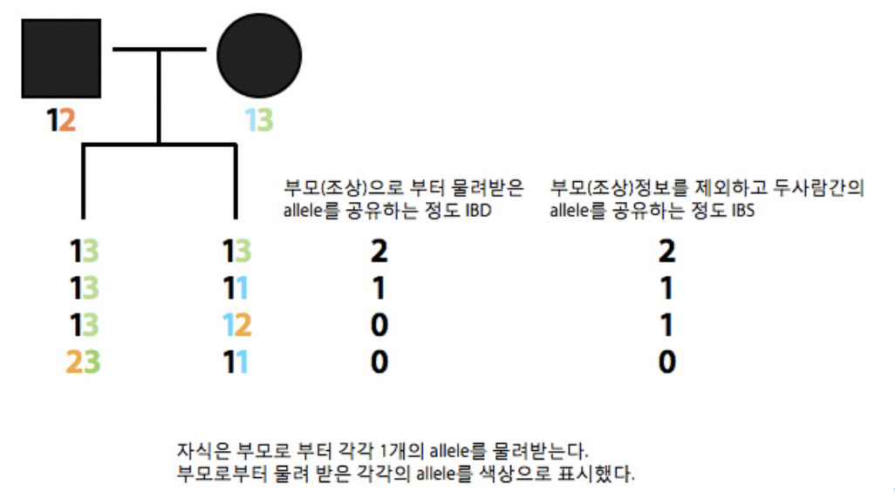
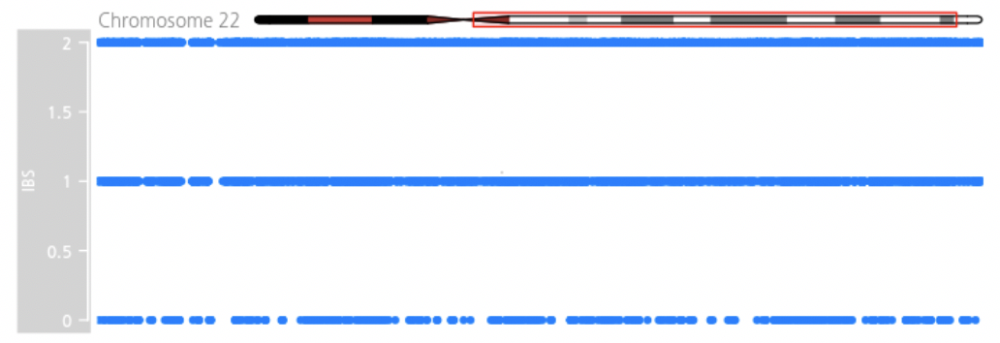

유전적 거리 측정¶
유유상종이라는 말이 있다. 한마디로 같은 성향의 사람들끼리 잘 뭉친다는 이야기로 그 사람을 알기 위해서는 친구들을 보라는 이야기와도 그 맥락을 같이 한다. 달리 말하면 친구 사이에는 서로의 행동이나 취향, 외모 등의 닮았다는 이야기가 될 수 있다. 그런데 친구 사이는 낯선 사람보다 유전자가 유사한 경향이 있다는 연구가 있다.
1970년대부터 2000년대 초반까지 친구관계를 유지한 1,367쌍의 유전자와 서로 낯선 사람들의 유전자를 분석한 결과 친구 관계에 있는 그룹의 유전자 정보가 친구 관계가 없는 그룹보다 유사했다. 왜 그런지에 대한 명확한 이유는 없지만, 아마도 유전자가 비슷한 사람들은 환경이 비슷한 경우가 많고 그 결과 서로 만날 가능성과 그로 인해 친해질 확률도 높을 것이다. 또다른 연구에 의하면 친한 친구와 사는 거리가 가까울수록 행복해질 가능성이 높다는 연구결과가 있다.
그렇다면 유전체 데이터를 통해서 개인간의 유전적 거리를 통해 서로간의 유사도를 알아내는 것일까? 유사도(similarity score)를 계산하는 방법은 유클리디안 거리점수(Euclidean distance score)나 피어슨 상관점수(Pearson correlation score) 계산 방법 등이 존재하며 유전체 데이터에서는 유전적 거리를 측정하는데 기본적으로 IBS 또는 IBD 방법을 이용한다.
Note
- 이번 장을 끝마치면 당신은 아래의 3가지에 대해서 배울 수 있다.
- 유전체 데이터의 유사도 측정 방법
- 두 샘플간의 유사도 측정
- Gviz 라이브러를 이용한 유전체 데이터 시각화 방법
개인 유전체 데이터에서 유전적 거리 데이터는 모든 개인 유전체 분석의 시작점이라고 할 수 있다. 여기서는 간단한 방법으로 첫 번째 분석을 수행하고 직접 눈으로 분석 결과를 시각화하는 것까지의 모든 과정을 다룬다.
지노타입간의 유사도 측정¶
둘 혹은 그 이상의 사람간의 지노타입 데이터를 서로 비교하여 유사도를 측정하는 방법은 어떠한 가족 정보도 없는 상태에서 두 사람이 가족관계가 있는지 어느정도 확인 할 수 있다. 얼마나 많은 유사성이 있는지에 대한 것은 많은 방법이 존재하며 가장 널리 사용되는 방법은 IBD (Identity by decent)와 IBS (Identity by state)라는 방법이 존재한다. IBD는 두 사람이 조상 (부모)로부터 어떠한 allele를 물려 받았는지를 통해 서로간의 위치를 확인하는 방법이며, IBS는 두 사람간에 어떠한 allele를 공유하는지를 단순히 말해주게 된다.
{kind=link}
첫 번째 라인의 자식들은 각각 아버지로부터 1을 어머니로부터 3을 물려받았다. 따라서 13/13으로 각각 부모로 물려받은 공통 allele의 개수가 2개이므로 IBD 값은 2, 부모를 배제하고 서로간의 13/13 두개의 allele가 같으므로 IBS 값도 2가 된다. 세번째 라인의 경우 13/12 로 서로 같은 1을 가지고 있지만 이는 각각 부/모로부터 따로 받은 것이기 때문에 부모로부터 받은 allele를 서로간에 공유하는 것이 없기 때문에 IBD는 0이지만, 서로간에 1이라는 것을 공유하기 때문에 IBS는 1이 된다.
이러한 IBD나 IBS를 통해 얻어진 값들은 PCA나 MDS를 통해 분석하게 되면 사람들간의 거리 (유사도)를 한눈에 확인 할 수 있다.
IBS를 이용한 두 사람간의 지노타입 비교¶
IBS를 통해 지노타입을 비교를 수행하면 다음의 3가지 분류로 나뉘게 된다. 2의 값을 가지는 경우 즉 두 사람이 특정 마커에서 동일한 지노타입을 가지는 경우(identical)와 두번째는 1의 값을 가지는 경우로 두 사람간에 하나만 같은 지노타입을 공유하는 경우(one-allele shared)와 마지막으로 0의 값을 가지는 경우로 두 사람간에 지노타입이 둘다 같지 않은 경우(no-allele shared)이다.
먼저 snpedia.com으로부터 2명의 공개된 한국인 23andMe 지노타입 데이터를 이용하여 각 마커에 대한 IBS를 계산하도록 한다. 아래의 코드는 python에서 데이터 분석을 위해 많이 사용하는 Pandas 라이브러리의 데이터프레임(DataFrame)을 이용하여 데이터를 불러온다.
import pandas as pd
import matplotlib.pyplot as plt
#아시아인 조상의 23andMe 데이터
snpcalls_asian = pd.read_table('../genome_Hong_ChangBum_Full_20100816082459.txt',
comment='#', names=['name', 'chrom', 'position', 'genotype'],
low_memory=False)
#유럽인 조상의 23andMe 데이터
snpcalls_european = pd.read_table('../genome_Lilly_Mendel_Mom__20080505171156.txt',
comment='#', names=['name', 'chrom', 'position', 'genotype'],
low_memory=False)
print(snpcalls_asian.head())
print(snpcalls_european.head())
name chrom position genotype
0 rs3094315 1 742429 AA
1 rs12562034 1 758311 GG
2 rs3934834 1 995669 CC
3 rs9442372 1 1008567 GG
4 rs3737728 1 1011278 GG
name chrom position genotype
0 rs3094315 1 742429 AA
1 rs12562034 1 758311 AG
2 rs3934834 1 995669 CT
3 rs9442372 1 1008567 AG
4 rs3737728 1 1011278 GG
데이터프레임에 저장된 지노타입 데이터는 마커의 이름(name), 염색체 번호(chrom), 염색체상에의 위치(position), 지노타입(genotype) 형태로 저장된다. 2명의 지노타입 데이터가 저장된 데이터 프레임을 하나의 데이터 프레임에 통합(merge)하며 이때 동일한 정보를 가지는 컬럼인 name, chrom, position은 하나만 저장한다.
snpcalls = pd.merge(
snpcalls_asian[['name','chrom','position', 'genotype']], snpcalls_european[['name','chrom','position', 'genotype']],
how='inner', left_on=['name','chrom','position'], right_on=['name','chrom','position'], suffixes=['_asian', '_european'])
print(snpcalls.head())
name chrom position genotype_asian genotype_european
0 rs3094315 1 742429 AA AA
1 rs12562034 1 758311 GG AG
2 rs3934834 1 995669 CC CT
3 rs9442372 1 1008567 GG AG
4 rs3737728 1 1011278 GG GG
각 지노타입을 비교하여 IBS를 계산한다.
snpcalls_with_pos= pd.merge(snpcalls_asian,snpcalls, how='inner',left_on='name', right_on='name')
def genotype_ibd (maternal, paternal):
r = [0,0]
if len(maternal) == len(paternal):
if maternal[0] == paternal[0]:
r[0] += 1
if len(maternal) >= 2 or len(paternal) >= 2:
if maternal[1] == paternal[1]:
r[1] += 1
ibd = int(r[0]) + int(r[1])
return ibd
ibd_cal = pd.DataFrame(
snpcalls_with_pos.apply(lambda row:genotype_ibd(row['genotype_asian'],
row['genotype_european']),axis=1).tolist(),
index=snpcalls.index,
columns='IBD'.split())
print(ibd_cal.head())
IBD
0 2
1 1
2 1
3 1
4 2
마지막으로 계산된 IBS값과 지노타입 데이터를 합친다.
ibd_cal = pd.concat([snpcalls,ibd_cal],axis=1,join_axes=[snpcalls.index])
print(ibd_cal.head())
name chrom position genotype_asian genotype_european name \
0 rs3094315 1 742429 AA AA rs3094315
1 rs12562034 1 758311 GG AG rs12562034
2 rs3934834 1 995669 CC CT rs3934834
3 rs9442372 1 1008567 GG AG rs9442372
4 rs3737728 1 1011278 GG GG rs3737728
chrom position genotype_asian genotype_european IBD
0 1 742429 AA AA 2
1 1 758311 GG AG 1
2 1 995669 CC CT 1
3 1 1008567 GG AG 1
4 1 1011278 GG GG 2
전체 IBS값을 히스토그램으로 표시한다. 두 사람이 genotype이 모두(2개의 allele) 일치하는 비율이 가장 높고, 1개만 일치, 모두 일치하는 않는 순으로 나타난다. 만약 두 사람이 부모와 자식간의 관계라면 어떨까? 자식은 부 또는 모 양쪽에서 하나씩의 allele를 물려 받기 때문에 부-자식 관계라면 0즉 모두 일치하지 않는 경우는 나타나지 않을 것이다. 위처럼 0,1,2가 모두 나왔다면 이 두 사람은 아무런 인척관계가 없을(unrelated) 확률이 높다.
import matplotlib
matplotlib.style.use('ggplot')
plt.figure()
plt.style.use('ggplot')
plt.rcParams['font.size'] = 10
plt.rcParams['axes.labelsize'] = 10
plt.rcParams['axes.labelweight'] = 'bold'
plt.rcParams['axes.titlesize'] = 10
plt.rcParams['xtick.labelsize'] = 8
plt.rcParams['ytick.labelsize'] = 8
plt.rcParams['legend.fontsize'] = 10
plt.rcParams['figure.titlesize'] = 20
fig, ax =plt.subplots()
ibd_cal['IBD'].value_counts().plot(ax=ax, kind='bar')
print(ibd_cal['IBD'].value_counts())
{kind=link}
위에서 사용한 데이터는 모두 한국인으로 한국인과 타 인종간 비교를 수행해 보면 유럽인과 한국인을 비교한 경우 정확히 일치하는 개수가 줄어들고 그에 따라 모두 일치하지 않는 개수가 늘어나는 것을 확인할 수 있다. 계산된 IBS값은 염색체, 염색체 위치, IBD 값만을 csv 형태로 저장하여 추후 타 코드에서 활용할 수 있도록 한다.
염색체별 유사성 비교¶
지금까지는 전체 염색체에 걸쳐 얼마나 두 사람간에 지노타입이 유사한지를 IBS라는 방법을 통해 유사한지를 살펴보았다. 이제 염색체별로 나누어서 비교해 보도록 한다. 우리가 사용하는 데이터는 인척관계가 없는 데이터를 사용해보았는데 부-모 자식간의 인척관계가 있는 데이터를 이용하여 염색체별로 어떠한 패턴이 나타나는지를 확인해 볼 것이다.
사람은 1번부터 23번 염색체와 성염색체라고 불리는 X, Y 염색체가 존재한다. 남자의 경우에는 이 성염색체가 XY로 존재하고 여성인 경우에는 XX로 Y 염색체가 없다. 즉 Y 염색체의 경우에는 부-모에게서 하나씩 물려받는게 아니라 아버지에게서만 물려 받게 된다.
또한 부-모와 자식간에 지노타입을 비교하는 경우에는 IBS값이 2또는 1만 존재해야만 한다. 적어도 부모 한쪽에서 하나씩의 지노타입을 물려 받았기 때문에 서로 두개의 allele가 모두 일치하지 않는 부분이 존재하지 않아야 한다. 하지만 실제 0인 경우가 나타나는 경우도 발생하는데 이는 다음의 몇가지로 생각해 볼 수 있다.
DNM (De novo mutation)은 부모에게서 나타나지만 자식에게 나타나는 돌연변이(mutation)로 인간 유전체 전체 영역을 기준으로 108bp당 1개 꼴로 나타난다고 한다. 이러한 돌연변이는 현재까지 아버지의 나이와 연관이 있다고 하며 나이가 많은 아버지일수로 자식에게 이러한 돌연변이가 발생 빈도가 높아진다고 한다.
두번째 경우는 삭제 (hemizygous deletion)이 발생한 경우로 부-모 중 한쪽의 유전자가 삭제 되어 유전되지 않는 경우이다.
마지막은 에러(error)인 경우로 지노타이핑 또는 시퀀싱 과정에서 지노타입을 잘못 읽은 경우이다. 일반적으로 지노타이핑의 경우 99.9%이상의 정확도를 보인다고 알려져 있는데 23andMe의 경우 지노타이핑시 한번에 50만개의 정보를 읽어 들인다. 이중 0.1%만 하더라도 500개의 에러가 발생할 수 있게 된다.
염색체 표현하기¶
23쌍의 염색체를 단순화하여 표현한 것을 이디오그램(ideogram)이라고 한다. 우리는 이 단순화된 염색체상에 IBS값을 표현하는데 이번에는 R코드를 활용할 것이다. Gviz 라이브러리는 유전체 데이터를 가시화(visualization)하기 위한 R 라이브러리로 유전체상의 위치정보와 표시하기 위한 데이터를 입력으로 주면 다양한 방법으로 유전체 데이터를 가시화하는 라이브러이다. 기본적으로 트랙(track) 단위로 유전체 정보를 표시하게 된다.
이전에 계산된 IBS값이 저장된 텍스트 파일을 읽어 들여 22번 염색체만 저장한다.
library(Gviz)
library(GenomicFeatures)
ibd<-read.csv(‘ibd.txt’)
ibd_chr22 <- subset(ibd, chrom==22
이디오그램과 IBS를 표시할 두개의 트랙을 추가하고 최종적으로 두개의 트랙을 포함하여 그래프를 그린다.
염색체22번의 이디오그램과 IBD값을 보여준다. 서로 인척관계가 없는 데이터 이므로 0,1,2의 값이 모두 나타나는 것을 확인 할 수 있다. 만약 부-모, 자식간의 샘플이라면 0(불일치)가 나타나지 않을 것이다.
{kind=link}
10번 염색체에 대해서 아버지와 어머니를 비교 시 0,1,2가 모두 분포하는 반면, 어머니와 아들은 1 즉 반만 물려 받게 된다. 아버지와 아들의 경우도 0이 나타나지 않아야 하는데 화살표로 표시된 부분과 같이 불일치가 나타나는 경우는 hemizygous deletion으로 아버지로부터 해당 부분을 물려받지 못한 경우라고 할 수 있다.
지금까지 간단하게 두 샘플의 유전적 거리를 측정하는 방법에 대해서 배웠다. 간단한 방법이지만 이 거리 측정 방법을 확장하여 우리는 인종간의 거리나 친인척을 찾는데 이를 활용할 수 있다. 이러한 방법들은 뒤에서 자세히 다룬다.